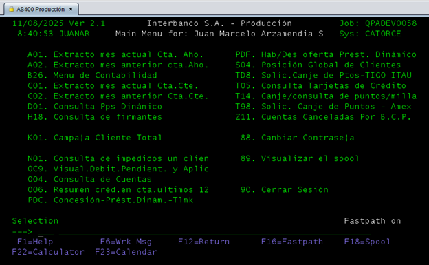
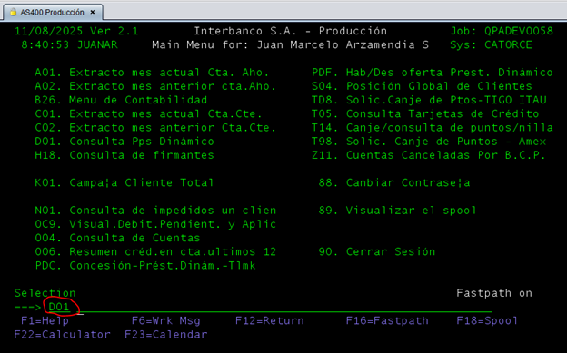
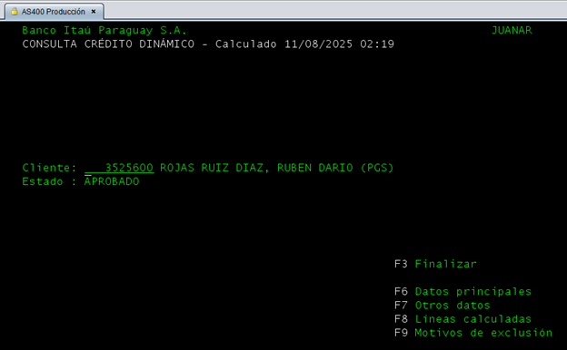
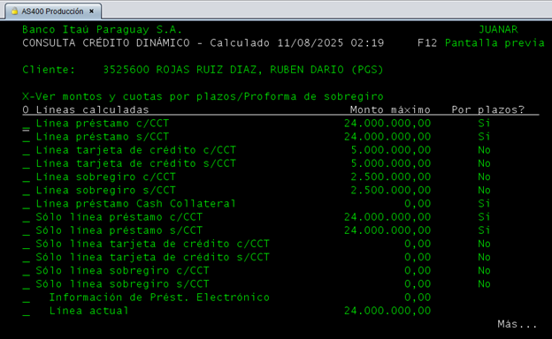
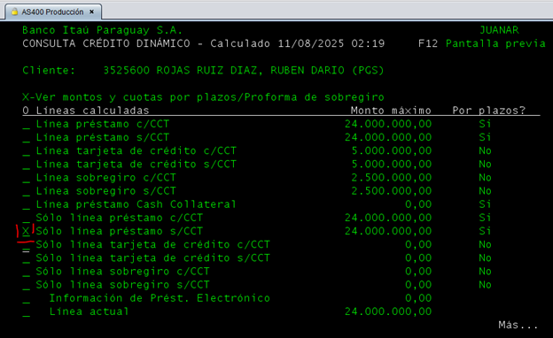
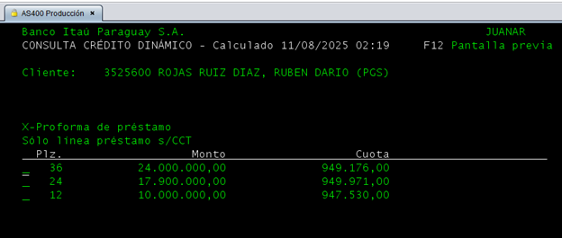

Ingresar a AS400.

Seleccionar la opción D01 ubicada en la parte inferior izquierda.

Ingresar el número del cliente y presionar Enter.

Presionar F8 (líneas calculadas). Esto desplegará las opciones disponibles.
}
Desplazarse en la columna izquierda según corresponda:
Colocar una X en la opción correcta y presionar Enter.

Verificar el monto máximo sumando la línea rotativa de la tarjeta de crédito. Esto sirve para determinar el monto y los plazos disponibles para ofrecer al cliente.
